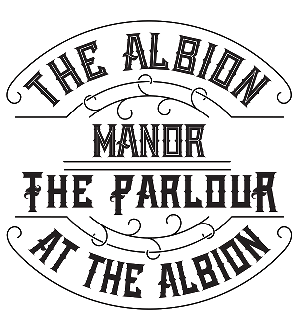

Chicago's Original Soccer Bar Since 1992
Opened initially as Ginger's Ale House in 1992 by the original owner, Jamie "Ginger" Hale, AJ Hudson's Public House was born in 2011 along with his wife, Julia Shell. The couple revamped and renamed the pub after their children, AJ (Anaïs Jillian) and Hudson. At its heart, AJ Hudson's is an English pub, and Chicago's original soccer bar, a home for Chicagoans and ex-pats from all over the world to watch the beautiful game and all sorts of other sports. With a full menu of upscale pub fare and over 100 beers plus a historical cocktail program, AJ Hudson's Public House is a welcoming neighborhood gathering spot, offering lunch and dinner seven days a week, along with brunch on the weekends.

Your Dandy Neighborhood Cocktail Bar & Restaurant
Opened in December 2019 by married partners Julia Shell and Jamie Hale, The Dandy Crown is an approachable, neighborhood cocktail-focused bar and restaurant in the River West neighborhood of Chicago. Designed and curated by Julia, the vibe is laid-back-luxe and filled with images of nontraditional dandy kings, queens, and other crown-wearers, a nod to Jamie's British citizenship. Nestled in a stand-alone, two-story vintage brick building, the interior combines bar space and lounging areas. The first floor features the main bar plus a fireplace lounge surrounded by mid-century modern, comfortable chairs and couches. In contrast, the second floor offers overflow and private party space with another full bar and rooftop patio deck. Adjacent to the property is a spacious and comfortably chic year-round courtyard patio complete with fire pits and heaters for those cold Chicago winters.
A Place For Soccer and Cocktails Under One Roof
Married partners Julia Shell and Jamie Hale have blended their personalities from their two other restaurant concepts, AJ Hudson's Public House and The Dandy Crown, to create The Albion Manor and The Parlour at The Albion. Albion was the archetypal name for the island of Great Britain, referencing the chalk-like white cliffs of Dover. The Albion Manor is a warm and welcoming English pub airing international sports on the telly, particularly footy (otherwise known as soccer), along with many other local and national sports. Upstairs, The Parlour at The Albion offers an auspicious respite filled with ardor, colour, and texture for cocktails and peckish provisions.